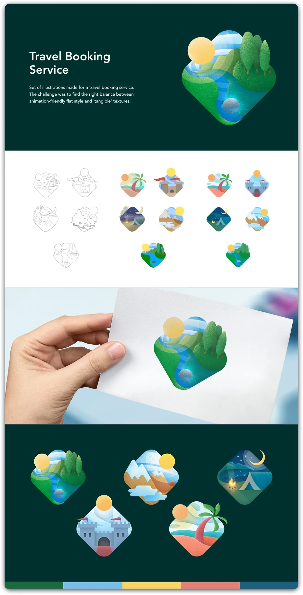
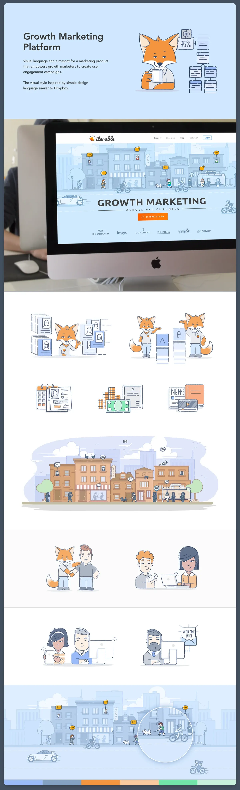
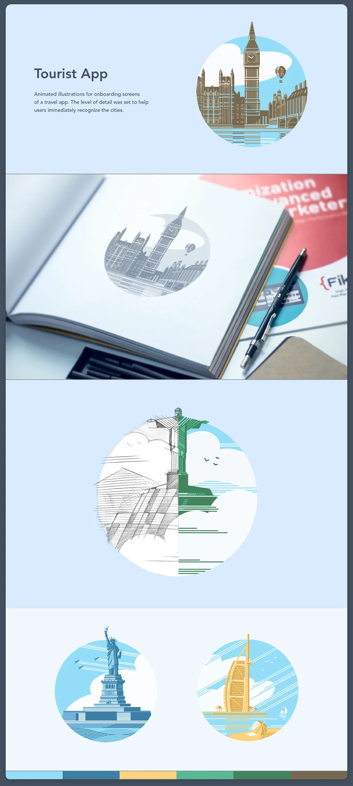
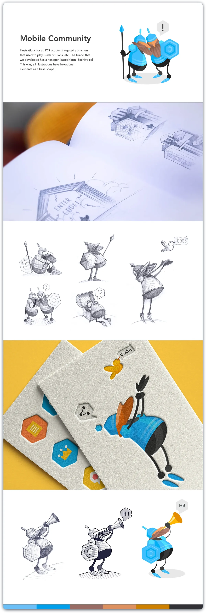
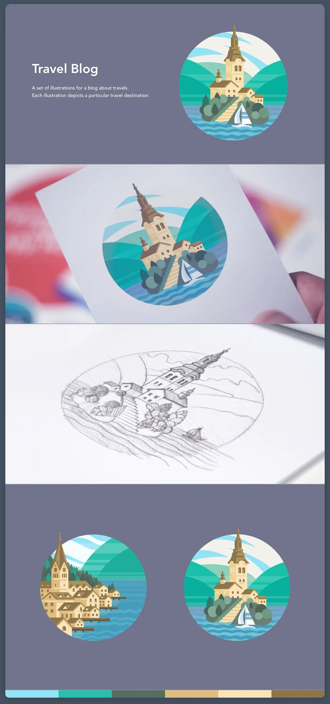
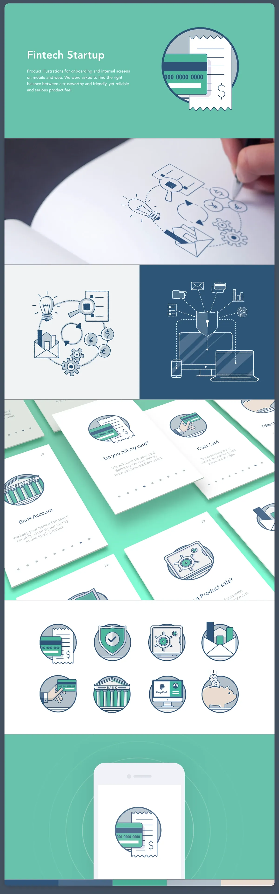
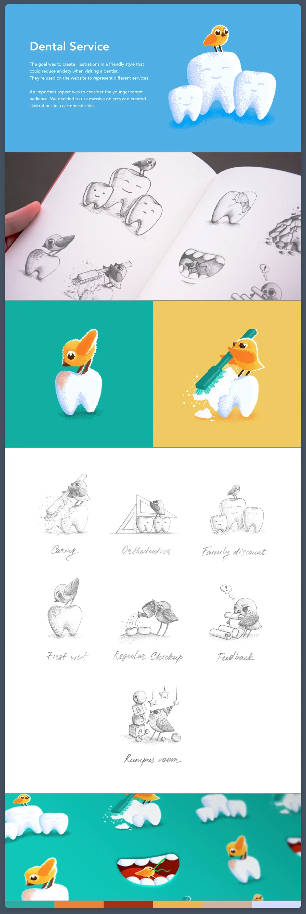
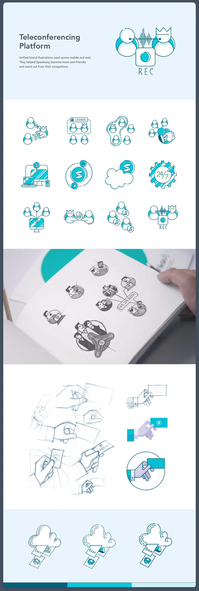
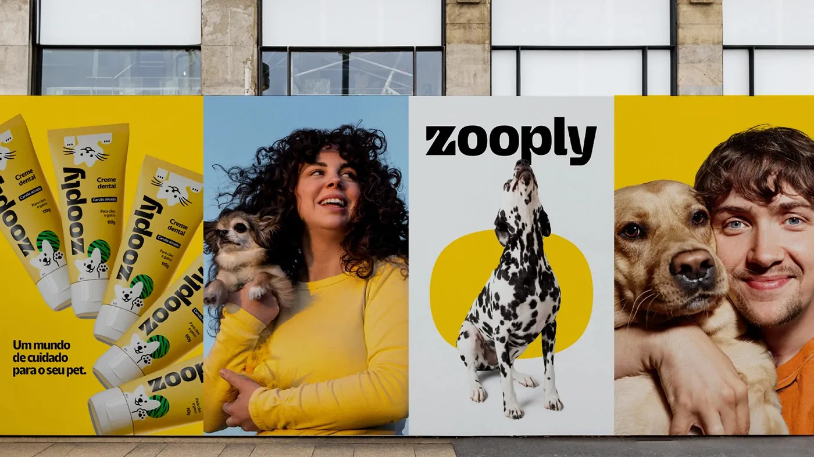

שפה גרפית, איור וצילום
לוגו וצבעים הם רק ההתחלה. האייקונים, האיורים, הדמות, הטקסטורות והצילומים הם מה שממלא את העולם של המותג, וכשהם מדברים באותו קול, מזהים את המותג גם בלי לראות את הלוגו.
שפה גרפית: אייקונים ואיורים
השפה הגרפית היא החיבור בין עולם הצורה לעולם הרעיון. היא מביעה את האישיות של המותג גם בלי מילים.
אם צפויה שימושיות באייקונים או איורים, חשוב להגדיר מראש את הסגנון הגרפי: האם האיורים יהיו שטוחים (Flat) או ריאליסטיים, מונוכרומטיים או צבעוניים, קוויים, גיאומטריים או בעלי מרקם וצורה רכה יותר.
השפה הגרפית צריכה לשמור על אחידות עם הלוגו, הפונטים ופלטת הצבעים, כך שכל אלמנט, מאייקון ועד רקע, ירגיש שייך לאותו עולם חזותי.
זה ממש לא תירוץ. היום קיימים מאגרי STOCK איכותיים וגם כלי AI גרפיים שמאפשרים לייצר או להתאים איורים לסגנון המותג שלכם. אפשר להוריד, לשלב, לשנות ולהתאים אלמנטים קיימים כך שישתלבו בצורה טבעית בקונספט הכולל.
אין שום בעיה לקחת איור או אייקון קיים ולבצע עליו התאמות צבע, פרופורציות או סגנון קו, כל עוד התוצאה הסופית מרגישה אחידה, שייכת ונכונה לשפה העיצובית של המותג. איך עובדים נכון עם AI
העיקר הוא בחירה חכמה ועקבית, לא „מקוריות” לשם מקוריות. מיתוג טוב נמדד באחידות ובדיוק, לא בכך שהכול צויר מאפס.
דוגמה לתיק עבודות מצוין
דוגמה לתיק עבודות מצוין שמציג מגוון שפות גרפיות: Brand Illustration Vol. 1


שמונה פרויקטים מתוך אותו תיק עבודות, וכל אחד מהם הוא שפה שלמה. שימו לב שרוב הפרויקטים מציגים גם את הסקיצות בעיפרון, גם את הפלטה (הפס הצבעוני בתחתית), וגם את האיור בשימוש, על נייר או על מסך. זו בדיוק הרמה שכדאי לכוון אליה.
















חמישה סגנונות איור נפוצים
כשמגדירים „סגנון”, כדאי להכיר את השמות שהתעשייה משתמשת בהם. כל אחד מהם מושך לכיוון אחר:
שטוח
צורות נקיות בלי צל ובלי עומק. קריא בכל גודל, מתאים לממשקים ולמותגים צעירים.
קווי
קו אחיד בלבד. אלגנטי וקל, ומשתנה בקלות לכל צבע של הפלטה.
איזומטרי
מראה תלת־ממדי בדו־ממד, בזוויות של 30°. אהוב על הייטק ומוצרים טכניים.
תלת־ממד
חומר, אור וצל אמיתיים, למשל ב־Blender או Cinema 4D. מרשים, ודורש הכי הרבה עבודה לשמור על אחידות.
ציור יד
קו לא מושלם בכוונה. משדר חום, אותנטיות ומגע אנושי.
פיתוח שפה איורית או צילומית
אם יש דמות, סמל או סגנון איור, חשוב לפתח אותם לסדרה של סצנות ושימושים: על אריזות, בפרסום דיגיטלי, בשילוט, בתפריט ובמרצ’נדייז. כך נוצר סיפור שלם ולא רק אלמנט אחד חוזר.
צרו סדרה של 5–7 יישומים שונים שבהם הדמות או הסגנון מופיעים.
איך בונים סדרה שמחזיקה
- כתבו את חוקי האיור לפני שמציירים את השני. עובי קו, פלטה, פרופורציות הדמות, זווית מבט, כמה פרטים מותר. דף אחד מספיק.
- ציירו שלוש סצנות מפתח רחוקות זו מזו (למשל אריזה, באנר קטן ושלט גדול). אם הסגנון עובד גם בקטן וגם בגדול, הוא יעבוד בכל השאר.
- שימו את כולן על קיר אחד ובדקו מרחוק: נראות כמו משפחה? מה שבולט החוצה הוא מה שצריך לתקן.
אותו היגיון עובד גם בצילום: סגנון צילומי אחד, שחוזר בכל היישומים. תמונות וצילומים הרחבת יישומים
מה להראות: גרפיקה, דמות ואייקונים
ברשימת הבדיקה של פרויקט מיתוג יש שלושה סעיפים שכולם חלק מאותה שפה גרפית. הנה מה שכל אחד מהם צריך להכיל.
שפת גרפיקה (Graphic Language)
האלמנטים הקטנים שמלבישים את המותג גם כשאין לוגו בפריים. לדוגמה:
הצורות שתבחרו לא ניטרליות: עיגול, משולש ומגן משדרים דברים שונים. פסיכולוגיה של צורות
מערכת הדמות (Character System)
אם יש למותג דמות, היא לא אמורה להופיע רק פעם אחת באותה תנוחה. כדאי להציג:
- סט הבעות
- שימוש בדמות בפוסטים
- שימוש באריזה
- שימוש באייקונים
דמות טובה נבנית מכמה צורות פשוטות, ולכן קל לשנות לה הבעה בלי לאבד את הזהות: הגוף והעלה נשארים תמיד; העיניים והפה משתנים, ורק ברגש קיצוני גם הצבע.
אייקונים (Icon set)
סט אייקונים באותה שפה. כל האייקונים חייבים להיראות כאילו צייר אותם אותו אדם, באותו יום, עם אותו עט: אותו עובי קו, אותן פינות, אותה רמת פירוט.
הגריד של האייקון
הסיבה שסטים מקצועיים נראים „שייכים” היא שכולם מצוירים על אותו גריד, עם אותם חוקים. הסטנדרט בתעשייה:
- משטח של 24×24 פיקסלים, עם שוליים של 2px מכל צד (הקו המקווקו הירוק).
- קו בעובי 2px (כמו בסטים Feather ו־Tabler), או 1.5px לסגנון עדין יותר. עובי אחד לכל הסט.
- מעגל עזר וריבוע עזר, כדי שעיגול וריבוע ייראו באותו „משקל” למרות שהם בגדלים שונים.
- סגנון אחד או שניים לכל הסט, למשל קווי לברירת מחדל ומלא למצב פעיל. כל אייקון מצויר בכל הסגנונות שנבחרו.
הגדלים קופצים בכפולות של 8 (16, 24, 32, 40, 48), בדיוק כמו מערכת הריווח. ואם לא מציירים מאפס, סטים פתוחים וחינמיים כמו Phosphor, Tabler ו־Lucide הם נקודת פתיחה מצוינת להתאמה. מערכת ריווח של 8
כך זה נראה כשמפרקים מותג אחד לשלושת הסעיפים.
הדוגמה נכתבה במקור כמשוב לסטודנט שעבד על מותג כזה, ולכן היא כל כך ספציפית.
שפת הגרפיקה, במקרה של המותג הזה
- גרפיטי
- קווי דיו
מערכת הדמות
יש כבר התחלה טובה. אבל כדאי להציג: סט הבעות, שימוש בדמות בפוסטים, שימוש באריזה ושימוש באייקונים.
סט אייקונים באותה שפה
- דבורה
- חריפות
- דבש
- טעם
- אש
אחד עשר עקרונות העיצוב
מאחורי כל שפה גרפית טובה עומדים אותם עקרונות קלאסיים. הם לא חוקים שצריך לסמן עליהם וי, אלא אוצר מילים: כשמשהו בעמוד „לא עובד”, כמעט תמיד אפשר לקרוא לבעיה בשם של אחד מהם.
אלמנט אחד שהעין פוגשת ראשון. אם הכול מודגש, שום דבר לא.
חלוקת המשקל החזותי. סימטרית, או א־סימטרית שעדיין מרגישה יציבה.
הבדל ברור (בהיר מול כהה, גדול מול קטן) שגורם לדברים לבלוט.
אותו צבע, צורה או מבנה שחוזרים, ובונים זיהוי ועקביות.
יחסי הגודל בין האלמנטים. מה שגדול נתפס כחשוב יותר.
המסלול שהעין עוברת בעמוד, מהדבר החשוב ביותר אל הבא אחריו.
שטח ריק הוא לא בזבוז. הוא נותן לאלמנט לנשום ומבליט אותו.
כל החלקים מרגישים שייכים לאותה מערכת ומעבירים מסר אחד.
חזרה מסודרת שיוצרת משטח שלם, כמו פאטרן של מותג.
מרווחים שחוזרים. קצב קבוע מרגיע, קצב משתנה מעורר.
שינוי שמוסיף עניין ומונע מונוטוניות, בלי לשבור את האחדות.
שני עקרונות שכדאי לזכור במיוחד במיתוג: חזרתיות היא מה שהופך אלמנט גרפי לסימן מזהה, ואחדות היא המבחן הסופי של כל השפה. ועל מרחב לבן ומרווחים יש פרק שלם. מרחב נשימה
שלוש דרכים לצייר את אותם עקרונות
שלושה פוסטרים שאספתי, שכל אחד מהם מסביר את אותם עקרונות בשפה גרפית אחרת. גם זה שיעור: אותו תוכן, שלוש זהויות.


תמונות וצילומים
הסגנון הצילומי הוא חלק בלתי נפרד מהשפה החזותית של המותג, והוא משפיע ישירות על הדרך שבה הקהל תופס את האישיות והאווירה של המותג.
יש להגדיר מראש את סגנון הצילום הרצוי כך שיתאים לעולם התוכן, לאופי ולערכים של המותג. חשוב לשמור על אחידות בין כל התמונות: אותה תאורה, אותו טון צבע ואותה גישה אנושית או סגנונית.
אפשר לבחור בין כמה גישות מרכזיות
שימו לב שהגישות מסתדרות בזוגות. כל זוג הוא החלטה אחת שצריך לקבל, והמותג יכול לשבת בכל נקודה על הציר:

כדאי להכין ספריית רפרנסים צילומיים שתשמש מדריך לכל מי שמפתח חומרים למותג. כך גם צלם, מעצב או קופירייטר יוכלו להבין את הכיוון החזותי המדויק.
מה כותבים בהנחיות הצילום
ספריית רפרנסים מראה את הכיוון. דף הנחיות קצר לצידה מונע ויכוחים. אלה השורות שכדאי שיהיו בו:
| נושא | מה מגדירים |
|---|---|
| תאורה | טבעית או סטודיו, רכה או קשה, מאיזה כיוון, ובאיזו שעה ביום מצלמים. |
| טיפול בצבע | חם או קר, רמת רוויה, והאם יש פריסט קבוע שכל התמונות עוברות. |
| קומפוזיציה | מרחק המצלמה, זווית, כמה אוויר יש סביב הנושא, והיכן משאירים מקום לטקסט. |
| נושאים | מה מצלמים ומה לא, איך נראים האנשים (אותנטי, מבוים או דוקומנטרי), וגיוון. |
| עיבוד | כמה רטוש, חדות, גרעין, ואיך נראה העור. מה אסור לגמרי. |
| טכני | לפחות 300 DPI בגודל ההדפסה לדפוס, ולרשת קובעים לפי פיקסלים (למשל פי 2 מגודל התצוגה). |
את כל זה מכניסים לספר המותג, ליד הלוגו והצבעים. ספר מותג